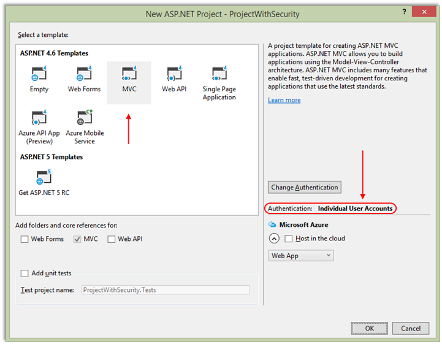
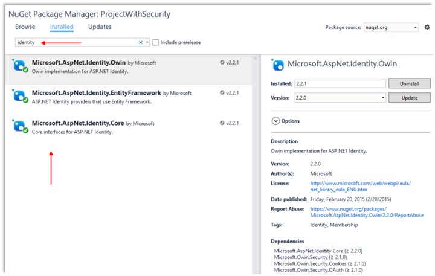

INT422 – Lecture 7
Introduction to security topics.
Test today
Test 6 is today, at the beginning of the timeslot, and will run approximately 18 minutes.
Textbook coverage
As previously announced, the textbook will have a supporting role as you learn new topics from these notes and your classroom sessions. Use the table-of-contents and the index to locate the topic, and then read about it there. A reminder: The textbook does not use view model classes in its discussions and code examples. We do.
Code examples
Project With Security
Security Introduction
Security Claims Introduction
Theme for today and the next few weeks
At this point in the INT422 course, you have learnedthe foundations to build interactive web apps that work with persistent data.
Now, it’s time to get security involved. This week, we begin a three-week study of security topics, including identity management, authentication, authorization, and interactive workflows/scenarios that involve security.
Along the way, you will learn something about Microsoft Azure services, and publicly hosting your web apps.
Security topics introduction and terminology
ASP.NET Identity: Web apps that you create with Visual Studio use a security system named ASP.NET Identity. Its components provide identity management (i.e. user account creation and maintenance), authentication, and authorization.
ASP.NET Identity is an implementation of widely-used and standards-based approaches to web app security (OAuth2, and OpenID Connect).
Terminology
A User Account is an object that represents a human user of a web app. A user account includes identification and description properties, including user name, a shared secret (i.e. a password), email address, etc.
Authentication is the process of presenting and validating credentials. A web app that’s configured to use ASP.NET Identity includes the components needed for authentication, including a login page. The word authentication is often abbreviated to AuthN (or authN).
Also, after authentication, the ASP.NET Identity system creates a security principal object, and attaches it to the execution context. Among other data, this object includes claims, which are descriptive pieces of information about the user (as you’ll learn more about soon). The web app returns an authentication cookie in the response to the browser. By convention, the browser will include the cookie in every subsequent request to the web app.
After a user authenticates successfully (i.e. logs in), the user’s claims determine whether they are authorized to perform tasks and access resources in the web app. This is the definition of Authorization. The word authorization is often abbreviated to AuthZ (or authZ).
❝This process or workflow will be described in more detail, in a later section of these notes.
Transition your knowledge of web apps security
As a user of the web, you have experience with web apps that have security components.
As a web programmer, you have some experience with security-related coding tasks. In INT322, you designed and created a credential store, to hold usernames and passwords. In addition, you coded a login form, and the credential validation (authentication) process. An access control list based scheme was used to protect resources. A useful experience, but not real-world enough.
In this INT422 course, we will use built-in components for all security tasks. In these components, there are several customization points to handle your app’s unique needs, so you will be introduced to a small number of useful customizations.
❝Strong recommendation:
Do not write your own security infrastructure for web apps.
Take advantage of standards-based approaches, and the efforts of many smart and trusted programmers who have created modern security infrastructure components. And, after learning about these topics, if you think you’re smart enough to fix something or make contributions, get involved in the projects already out there on the web.
How to create an ASP.NET MVC web app with security
As you work through this section of the notes, open the ProjectWithSecurity sample app. Use the Visual Studio Task List to locate the “Attention” comment tokens.
Then, open another Visual Studio instance, and create a new web app project, with security:
File > New > Project. Select the standard “ASP.NET Web Application”.
On the next dialog, choose the “Individual User Accounts” authentication scheme.
❝For the next few weeks, we will NOT use the “Web app project template V1”.

This article (on asp.net/visual-studio) has more detail about the available Authentication Methods. Here are some edited highlights:
Visual Studio project templates offer the following authentication methods:
Individual User Accounts
We will use this method now, and in the future, for our new web apps.
The app will use ASP.NET Identity for identity management and authentication.
Individual User Accounts provide two ways for a user to authenticate:
With Local login, the user can create a user account. The app stores user account (including a password hash) in the LocalDB database, which can be deployed to a hosted and public production environment. Local components perform authentication.
With Social login, the user authenticates with an external service, such as Facebook, Microsoft, or Google. The app creates a user account for the user in the local database, but does not store the password hash.
For both local and social login, ASP.NET Identity uses standards-based OAuth2 for authentication.
The database is managed by the Entity Framework Code First technologies, and all of the tables are represented by entity classes that can be modified. This means that you can easily customize the security- and profile-related data to fit your app’s needs.
ASP.NET Identity is a good choice if you are creating a public-facing web site which is mainly for users on the web. Which we are.
Work and School Accounts (previously known as Organizational Accounts)
If your organization uses Microsoft Active Directory or Microsoft Office 365, and you want to create a project that enables single-sign-on for employees and business partners, this method is a good choice.
Windows Authentication
If your organization is creating an internal-facing app, which will be used ONLY by employees who have Active Directory accounts, this method is a good choice.
ASP.NET Identity components, and recognizing them
In this section, you will learn how to locate and recognize the ASP.NET Identity components in the web app that you have just created.
If you open the NuGet Package Manager, and then search for “identity”, you will see at least three installed packages. Click the image to open it in a new tab/window.

The Microsoft-provided components are visible in the NuGet Package Manager, or as “assemblies” in the References branch of your project in Solution Explorer. Notable assemblies include a number of Microsoft.AspNet.Identity assemblies, and others in the Microsoft.Owin.Security group.
The other security-related components can be seen in source code files. Here’s a location and recognition tour:
Initial configuration of security, and loading the components at app startup
Look at the Startup class, in the Startup.cs source code file in the root of the project. When the app loads for the first time, it instantiates this class, and runs the Configure() method, by convention. As you can see, that method simply calls the ConfigureAuth() method.
The class’ implementation is split over two source code files. (Notice the “partial” keyword in the class definition statement.) The other part of the implementation is in the App_Start/Startup.Auth.cs source code file. Its ConfigureAuth() method loads and configures the security components.
Look at the code in the ConfigureAuth() method. It does several very important tasks:
1. Open and use the data store (i.e. the LocalDB database):
app.CreatePerOwinContext(ApplicationDbContext.Create);
2. Load the “user manager” and authentication (“sign in manager”) components:
app.CreatePerOwinContext<ApplicationUserManager>
(ApplicationUserManager.Create);
app.CreatePerOwinContext<ApplicationSignInManager>
(ApplicationSignInManager.Create);
(The user and sign in manager classes are defined in a companion source code file, App_Start/IdentityConfig.cs.)
3. Load / activate and configure HTTP “cookie authentication” for the app:
app.UseCookieAuthentication(new CookieAuthenticationOptions
// ...more...
Locate the security-related persistence components
In Solution Explorer, open the Models folder. Locate the IdentityModels.cs source code file. Its classes enable the creation, storage, and management of user accounts.
The ApplicationUser class models a user account. We can extend the class by adding our own descriptive properties. However, before doing so, check the list of existing properties, which you can see in its superclass, IdentityUser<TKey, TLogin, TRole, TClaim>. (Use “Go To Definition”, F12, in the code editor to help with this.)
The ApplicationDbContext class manages the persistent data store (the database). We can extend this class by adding our own DbSet<TEntity> properties for our web app’s entity collections (that we define in a separate DesignModelClasses.cs source code file). The class inherits from IdentityDbContext<TUser>, and ultimately DbContext, just like the data context that we have been using for the past several weeks.
Now, locate the AccountViewModels.cs and ManageViewModels.cs source code files.
AccountViewModels.cs includes the classes needed by the “Account” controller (mentioned later) for the user interface views, such as register, login, forgot password, and so on. Typically used for tasks done by unauthenticated users.
ManageViewModels.cs includes the classes needed by the “Manage” controller (mentioned later) for the user interface views, such as change password, etc. Typically used for tasks done by authenticated users.
When the database is accessed for the first time, the Entity Framework infrastructure creates a number of tables in the database which support identity management. All of the tables begin with the prefix “AspNet”. The most important are:
If we were to look at a diagram of the classes that are represented in the data store, it would look like the following. Click the image to open it in a new tab/window.
Security-related controller, view model, and view components
In Solution Explorer, open the Controllers folder. The Account controller has actions that enable a user to register for a new account, login, and do other tasks. As noted above, typically used for tasks done by unauthenticated users.
Study the Register method pair. They enable a browser user to “register”, or create a new user account.
Next, study the view model that support this task (RegisterViewModel).
Finally, study the Register.cshtml view (in Views/Account folder). This renders the UI for new account registration.
Now, study the Login method pair. They enable a browser user to “login”, or authenticate. This line of code performs authentication:
var result = await SignInManager.PasswordSignInAsync
(model.Email, model.Password, model.RememberMe,
shouldLockout: false);
Next, study the view models that support this task (LoginViewModel).
Finally, study the Login.cshtml view (in Views/Account folder). This renders the UI for login.
The Manage controller has tasks which are done by authenticated users, including password change, and some property value changes.
Shared view components
In the Views/Shared folder, there is a new _LoginPartial.cshtml view.
It holds markup and code for rendering content on the _Layout.cshtml view. If the user is authenticated, it displays links that enable the user to manage their account, and logout.
If not authenticated, it displays links for new account registration, and login.
Introduction to common security-related workflows
There are three common security-related workflows in an app:
Let’s get an introduction to each workflow.
New user account registration
A new web app (with security) does NOT include any user accounts.
After loading the app, notice the Register link in the upper-right area of the page. Follow it, and it will display a new account “Register” page:
In the default configuration of ASP.NET Identity, the user name is an email address. Also, it is configured to be a unique value. Therefore, in summary, it can be reliably used as a unique identifier. We will have more information about this fact later in the course.
The password must follow some rules. These are found in the PasswordValidator property, in the Create() method of the ApplicationUserManager class (in App_Start/IdentityConfig.cs).
manager.PasswordValidator
= new PasswordValidator
{
RequiredLength
= 6,
RequireNonLetterOrDigit
= true,
RequireDigit
= true,
RequireLowercase
= true,
RequireUppercase
= true,
};
❝Warning:
The user accounts that are created all have the same security profile. No account is more powerful or priviledged than another.
We fix that soon, by using claims.
Login / authentication
At the end of the new account registration process, the app authenticates you, and you are logged in.
Later, after logout, you can use the login page to authenticate. Click the image to open it in a new tab/window.
As noted earlier, authentication is the process of presenting and validating credentials.
During authentication, the ASP.NET Identity system creates a security principal object, and attaches it to the execution context. Among other data, this object includes claims, which are descriptive pieces of information about the user (as you’ll learn more about soon).
Also, the authentication process will create a data package – which is an HTTP cookie – and return it in the response to the browser user. The data package includes information about the authenticated user, but it does not include sensitive or secret data. It definitely includes the user name, and the user’s claims.
On subsequent requests from the browser user, the data package – the HTTP cookie – is sent with the request. The browser handles this task automatically.
How can you quickly determine whether you have successfully authenticated? Look in the upper-right area of the page. It will show a greeting, and a logout link. Click the image to open it in a new tab/window.
You can also use the web browser developer tools – F12 in any browser – to inspect the HTTP cookie.
How do you know this? Login to an ASP.NET MVC web app. Then, use the browser’s developer tool or inspector to examine the cookies collection for that web app/site. For example, using Google Chrome:
You will see a cookie named “.AspNet.ApplicationCookie“.
The browser will include the cookie with every subsequent request to the web app.
Here’s an image of the scenario described above. Click the image to open it in a new tab/window.
Protecting and accessing protected resources
As noted above, when a web app receives a request with an HTTP cookie, the security infrastructure validates the cookie. If valid, it creates an IPrincipal object, and attaches it to the request. That way, information about the authenticated user is available to your code, as the request makes its way through the request-processing pipeline.
The user’s claims determine whether they are authorized to perform tasks and access resources in the web app.
On the controller class declaration, and/or on its methods, we can add the [Authorize] attribute. In its simplest form, its presence requires the request (from the browser user) to be authenticated. In other words, it must include the HTTP cookie that indicates that authentication has happened.
Soon, you will learn other forms of the [Authorize] attribute, to handle security scenarios that are more real-world in nature.
❝Study the AccountController class. It includes an [Authorize] attribute on the class. This means that a request MUST be authenticated to run any method in the class.
However, notice the Login() and Register() methods. They include the [AllowAnonymous] attribute. This means that ANY request will be able to run these methods. Makes sense now, right?
In your code, how do you get access to the authenticated user’s information (in other words, its security principal)?
❝A security principal is an object that represents the security context under which the code is running. It can be inspected by your program code, so that you have decision-making information in your code path.
The information is in the User property.
In a controller, it’s simply the top-level User property. If you want to determine whether a request is authenticated, the Request.IsAuthenticated property will tell you.
In the manager object, it’s the HttpContext.Current.User property. If you want to determine whether a request is authenticated, the HttpContext.Current.Request.IsAuthenticated property will tell you.
Can I see an example?
“Can I see an example of the preceding section?”
Yes. Open the SecurityIntro code example, in Visual Studio. Study the code as you continue with the following tasks. The “Attention” comment tokens (on the Task List) are numbered, so sort the list, and go through them in sequence.
Run the app. Create a new user account, and login.
Then, use the nav menu links to perform the tasks on the menu. Notice that you have access to some information, and notice that you do not have access to other content.
Summary table
We have created this summary table as a quick reference for the components, responsible entity, and code assets and tasks involved in security.
|
Security task |
Responsibility |
Code assets and tasks |
|
Identity management |
ASP.NET Identity |
ApplicationUser
class |
|
Authentication |
ASP.NET Identity |
Account controller and view for login |
|
Authorization |
You, the web app programmer |
Authorize attribute on controller class and/or actions |
Problem, and solution
Above, you learned that the user accounts that are created in an app that uses ASP.NET Identity all have the same security profile. No account is more powerful or priviledged than another.
That’s a problem. A big problem, for real-world applications.
Most apps need user accounts with different security profiles.
What’s the solution?
Use claims. Claims are the key to modern claims-based security.
Introduction to claims
What is a claim? Here is an often-used definition:
❝A claim is a a statement that one subject makes about itself or another subject.
Therefore, a statement is descriptive information about a subject.
A subject is a participant in the lifetime of an application. A subject could be a human user, or a corporate body, or a programmable object (e.g. a security provider).
Claim examples
What does a claim (statement) look like?
It is a simple statement, in the format:
Claim type = Value
The claim type is a string. There’s a list of standard, predefined, or “well known” claim types, which are URIs. Here are some examples; assume that the subject is a user (and professor), Peter McIntyre.
User name:
Known informally as “name”.
For example:
name = pmcintyr
Date of birth:
Known informally as “dateofbirth”.
For example:
dateofbirth = 1980-05-15T08:00:00Z
Role (often used as a
security-oriented access role):
Known informally as “role” or “role claim”.
For example:
role = employee
role = faculty
role = coordinator
Surname (or family name, or
last name):
Known informally as “surname”.
A claim type string can also be a simple string, and not a URI, if you are defining a custom claim type for local use within the app or the app ecosystem. Here are some examples.
Full name:
The user’s full (readable) name (e.g. first name, and last name) is Peter
McIntyre.
For example:
fullname = “Peter McIntyre”
Driver’s license:
The user’s driver’s license number is M12345809515.
For example:
driverlicense = “M12345809515″
etc.
Claims management and issuance
While a claim is a statement about a subject, claims are managed and issued by an identity authority (which is the ASP.NET Identity system in our web app).
Then, a claim can be used by an application to authorize a user to access resources and/or perform tasks.
For our web app, claims are packaged in an authentication cookie, after a user successfully authenticates. Therefore, the result of a successful authentication is a cookie that (among other data) includes claims.
Our web app must trust the identity authority. (That is done by sharing a cryptographically-strong ‘machine key’ value between among the identity authority and your app. If you separate the identity authority and web app, you may – or will -have to configure this value. Although we do not do this in this INT422 course, you may want to do it in the future, for work in other courses.)
Code example with claims
Open the SecurityClaimsIntro code example.
Run the app, and study the code. The “Attention” comment tokens (on the Task List) are numbered, so sort the list, and go through them in sequence.
It is similar to the SecurityIntro code example above, but it has a number of important modifications, which will form the base of all our future apps that use security:
ASP.NET Identity and security learning resources
ASP.NET team: Creating ASP.NET Web Projects in Visual Studio 2013
ASP.NET team: Introduction to ASP.NET Identity
OAuth2 Authorization Framework (and in Wikipedia) (skim/read)
OpenID Connect (and in Wikipedia) (skim/read)
Microsoft Katana project (and a ‘getting started‘ with OWIN and Katana) (skim only, because we use the components differently)
Wikipedia article on claims-based identity
MSDN article on Claims-Based Identity Term Definitions
ASP.NET Identity: ClaimType Fields
ASP.NET Identity: How to: Create a Custom Claim
Textbook (Professional ASP.NET MVC 5): Chapter 7
Summary, and preview of what’s coming next
Above, you learned about the essential security topics – identity management, authentication, and authorization.
You were introduced to the ASP.NET Identity system, which “plugs in” to your web app. Then, you learned a number of introductory security configuration and use tasks.
In the next few weeks, we will continue learning more about writing security-aware web apps. Along the way, we will learn how to create our own data model, and host our web apps at a hosting service.
{kind=link}
{kind=link}
{kind=link}
{kind=link}
{kind=link}